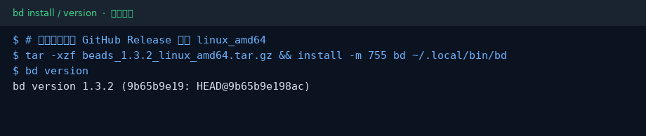
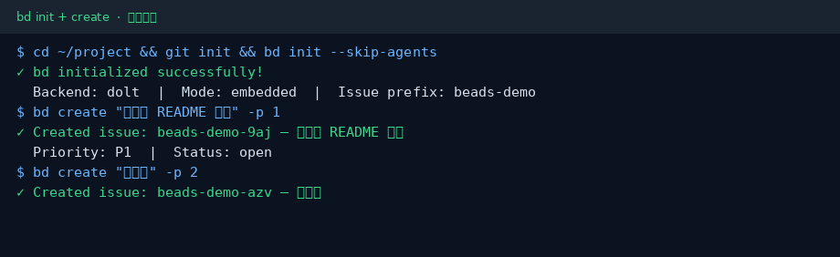
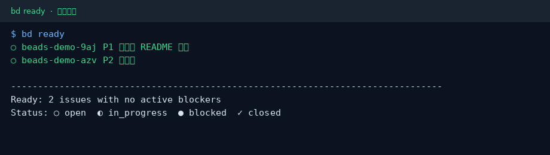

Beads（bd）小白中文教程
社区非官方导读 · 上游 gastownhall/beads · 文档
完整图文教程在 GitHub README：
30 秒上手
curl -fsSL https://raw.githubusercontent.com/gastownhall/beads/main/scripts/install.sh | bash cd your-project && bd init --skip-agents bd create "第一件事" -p 1 && bd ready
截图



记住三件事
- 系统级安装
bd，不要把上游仓塞进业务项目 - 入门用
bd init --skip-agents，先跑通 create / ready - 对接模型 CLI 时优先本地 / 国内兼容端